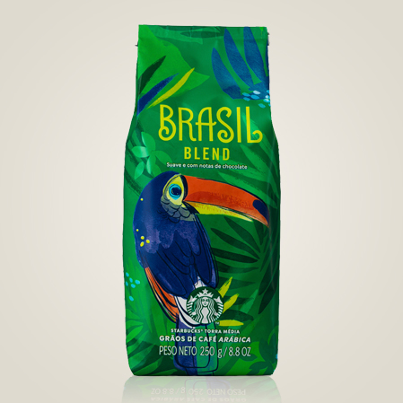
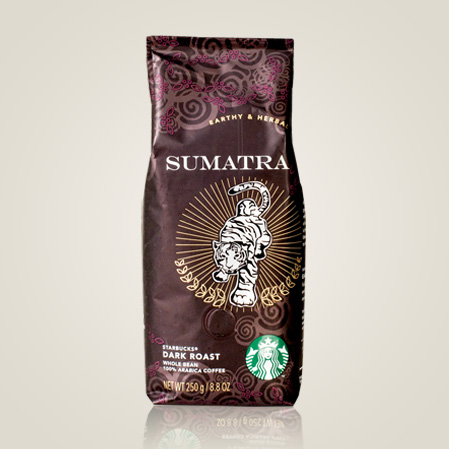
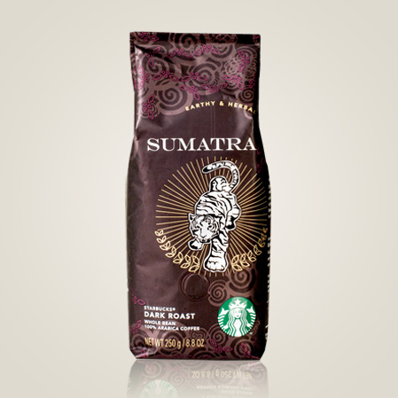

Logo
É só um breve momento – apenas uma mão passando um copo por sobre o balcão para outra mão estendida. Mas é uma conexão. Tudo o que fazemos procura respeitar essa conexão – desde nosso compromisso com o café de melhor qualidade do mundo até a forma como nós interagimos com nossos clientes e nossas comunidades para conduzir nosso negócio de modo responsável. Desde o princípio, há mais de cinquenta anos, quando éramos uma única loja, todo lugar a que fomos, todo lugar que tocamos, nós tentamos deixar um pouco melhor do que encontramos.

Em 1981, Howard Schultz (presidente, CEO e presidente do conselho da Starbucks) entrou pela primeira vez em uma loja Starbucks. Já no primeiro copo de Sumatra, Howard ficou empolgado com a empresa, na qual ingressou um ano mais tarde. Um ano depois, em 1983, Howard viajou para a Itália e se encantou com as cafeterias italianas e o aspecto romântico da experiência de tomar café. Ele teve a visão de levar a tradição das coffehouses italianas para os Estados Unidos. Um lugar para conversar, com um senso de comunidade. Um lugar intermediário entre trabalho e casa. Howard saiu da Starbucks por um breve período para abrir sua própria cadeia de cafés, Il Giornale, e retornou em agosto de 1987 para comprar a Starbucks com ajuda de investidores locais.
Brasil Blend

Colombia
 Espresso Roast
Espresso Roast
 Ethiopia
Ethiopia
 Pike Place® Roast
Pike Place® Roast
 Sumatra

Caffè Verona®
Sumatra

Caffè Verona®
 Você pode comprar todos esses cafés na nossa loja.
Você pode comprar todos esses cafés na nossa loja.